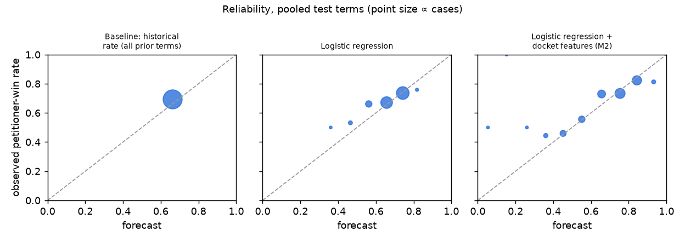

Supreme Court forecast ledger
Probability that the petitioner wins (the lower court is reversed or vacated), published before each argument and never edited. Informational only; not legal, financial or investment advice.
Live scoreboard
Open forecasts
Each case has a model forecast and two published benchmarks, so anyone can check whether the model beats simple base rates. M1 uses case-caption features only; M2 (from November 2026) adds features from the Court's docket, after meeting its pre-registered backtest criterion.
| Argued | Case | Model | Base rate (5 terms) | Base rate (lower court) | Published (UTC) |
|---|---|---|---|---|---|
| 2026-10-05 | Suncor Energy (U.S.A.) Inc. v. County Commissioners of Boulder County 25-170 · Supreme Court of Colorado | 66% M1 | 70% | 65% | 2026-09-23T16:28:52Z |
| 2026-10-05 | Floyd D. Johnson v. United States Congress 25-735 · United States Court of Appeals for the Eleventh Circuit | 56% M1 | 70% | 63% | 2026-09-23T16:28:52Z |
| 2026-10-06 | Winston R. Anderson v. Intel Corporation Investment Policy Committee 25-498 · United States Court of Appeals for the Ninth Circuit | 75% M1 | 70% | 76% | 2026-09-23T16:28:52Z |
| 2026-10-07 | Department of the Air Force v. Prutehi Guahan, fka Prutehi Litekyan 25-579 · United States Court of Appeals for the Ninth Circuit | 75% M1 | 70% | 76% | 2026-09-23T16:28:52Z |
| 2026-10-13 | Kendrick Jarrell Beaird v. United States 25-5343 · United States Court of Appeals for the Fifth Circuit | 52% M1 | 70% | 69% | 2026-09-23T16:28:52Z |
| 2026-10-14 | Michael Salazar v. Paramount Global, dba 247Sports 25-459 · United States Court of Appeals for the Sixth Circuit | 72% M1 | 70% | 70% | 2026-09-23T16:28:52Z |
| 2026-11-02 | Jasmine Younge v. Fulton Judicial Circuit District Attorney's Office, Georgia 25-352 · United States Court of Appeals for the Eleventh Circuit | 68% M2 | 70% | 63% | 2026-09-23T21:30:38Z |
| 2026-11-03 | St. Mary Catholic Parish, Littleton, Colorado v. Lisa Roy, in Her Official Capacity as Executive Director of the Colorado Department of Early Childhood 25-581 · United States Court of Appeals for the Tenth Circuit | 97% M2 | 70% | 64% | 2026-09-23T21:30:38Z |
| 2026-11-09 | Leonard W. Hoffmann v. WBI Energy Transmission, Inc. 25-159 · United States Court of Appeals for the Eighth Circuit | 38% M2 | 70% | 68% | 2026-09-23T21:30:38Z |
| 2026-11-10 | Department of Labor v. Sun Valley Orchards, LLC 25-966 · United States Court of Appeals for the Third Circuit | 51% M2 | 70% | 59% | 2026-09-23T21:30:38Z |
Resolved
| Decided | Case | Model | Base rate (5 terms) | Base rate (lower court) | Outcome |
|---|---|---|---|---|---|
| None yet. | |||||
Historical backtest
The M2 model met the pre-registered success criterion: against the historical base rate, the Brier score difference is -0.0127 [-0.0217, -0.0027] (negative is better; 95% interval from resampling whole terms). Test terms 2008–2025, 1,103 cases; each term is forecast using only earlier terms. M2 adds features from the Court's docket known before argument, chiefly the side the Solicitor General supported as amicus and amicus brief counts. M1 used only case-caption features and did not beat the base rate.
| Forecaster | Brier | Log loss | Accuracy | Calibration error |
|---|---|---|---|---|
| Base rate (all prior terms) | 0.2135 | 0.6186 | 69.4% | 0.034 |
| Base rate (lower court) | 0.2116 | 0.6140 | 69.5% | 0.031 |
| M1 model (case caption) | 0.2121 | 0.6152 | 69.2% | 0.024 |
| M2 model (+ docket) | 0.2009 | 0.5932 | 70.4% | 0.040 |
Lower is better for Brier score, log loss and calibration error.
| Comparison | Brier difference [95% CI] | Log-loss difference [95% CI] |
|---|---|---|
| M2 model vs Base rate (all prior terms) | -0.0127 [-0.0217, -0.0027] | -0.0254 [-0.0495, -0.0008] |
| M2 model vs Base rate (lower court) | -0.0108 [-0.0199, -0.0009] | -0.0208 [-0.0444, +0.0044] |
| M2 model vs M1 model (case caption) | -0.0112 [-0.0192, -0.0031] | -0.0220 [-0.0422, -0.0009] |
Caveats
- M2 is slightly less well calibrated than the base rate (calibration error 0.040 vs 0.034): its forecasts spread further and are somewhat overconfident.
- It beat the base rate in 14 of 18 test terms; it did worse in 2011, 2012, 2023, 2025.
- Reproducibility fix, made after the results and disclosed here. For consolidated cases, docket entries from different dockets filed on the same day were put in an order that depended on Python's per-run hash seed, so the same code could give slightly different features (2 cases) and label corrections (3 cases). The result above is the pre-registered run exactly as computed. Rerun with a fixed order (lead docket first; predictions identical across hash seeds): -0.0127 [-0.0217, -0.0027].
- Pre-registered sensitivity analysis (corrected code), using the Court's docket judgment where it disagrees with our opinion-text label (15 cases): -0.0118 [-0.0203, -0.0035].
- Post-hoc check (corrected code), disclosed after the results: 6 cases had an argument date parsed from the opinion that differs from the docket. Using the docket's dates: -0.0116 [-0.0208, -0.0016].
- Backtests describe the past. Live results on this page are the test that counts.
Brier score by term (bold: M2 beat the base rate)
| Term | Cases | Base rate | M1 | M2 |
|---|---|---|---|---|
| 2008 | 71 | 0.190 | 0.173 | 0.165 |
| 2009 | 68 | 0.201 | 0.189 | 0.185 |
| 2010 | 72 | 0.214 | 0.204 | 0.195 |
| 2011 | 63 | 0.253 | 0.260 | 0.265 |
| 2012 | 72 | 0.214 | 0.227 | 0.252 |
| 2013 | 66 | 0.203 | 0.194 | 0.187 |
| 2014 | 65 | 0.214 | 0.222 | 0.202 |
| 2015 | 61 | 0.252 | 0.264 | 0.241 |
| 2016 | 61 | 0.195 | 0.189 | 0.153 |
| 2017 | 56 | 0.207 | 0.209 | 0.184 |
| 2018 | 65 | 0.234 | 0.228 | 0.210 |
| 2019 | 52 | 0.239 | 0.232 | 0.197 |
| 2020 | 53 | 0.182 | 0.174 | 0.143 |
| 2021 | 57 | 0.171 | 0.149 | 0.157 |
| 2022 | 53 | 0.224 | 0.235 | 0.208 |
| 2023 | 57 | 0.199 | 0.192 | 0.209 |
| 2024 | 60 | 0.217 | 0.227 | 0.210 |
| 2025 | 51 | 0.242 | 0.261 | 0.248 |

How to verify
Every forecast, resolution and live score on this page comes from the public
ledger. Each forecast record
contains the SHA-256 hash of the one before it, so editing or deleting any record breaks the chain
(python verify.py forecasts.jsonl). Each publishing batch is timestamped in the Bitcoin
blockchain with OpenTimestamps (ots verify batches/<file>.ots), which shows the forecast
existed before the ruling. Resolutions follow the frozen rules in resolution_rules_v<N>.yaml.